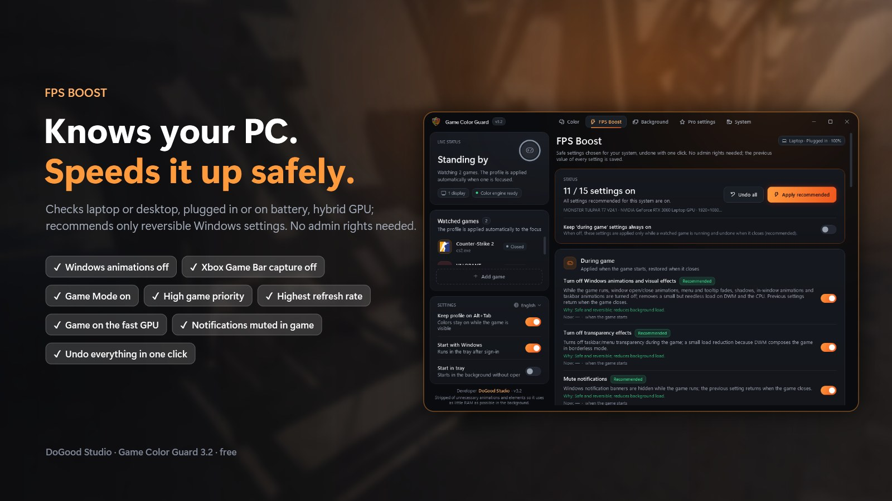
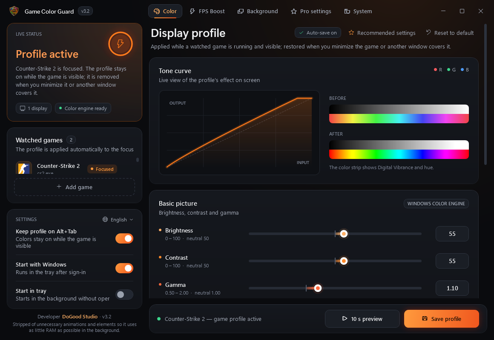
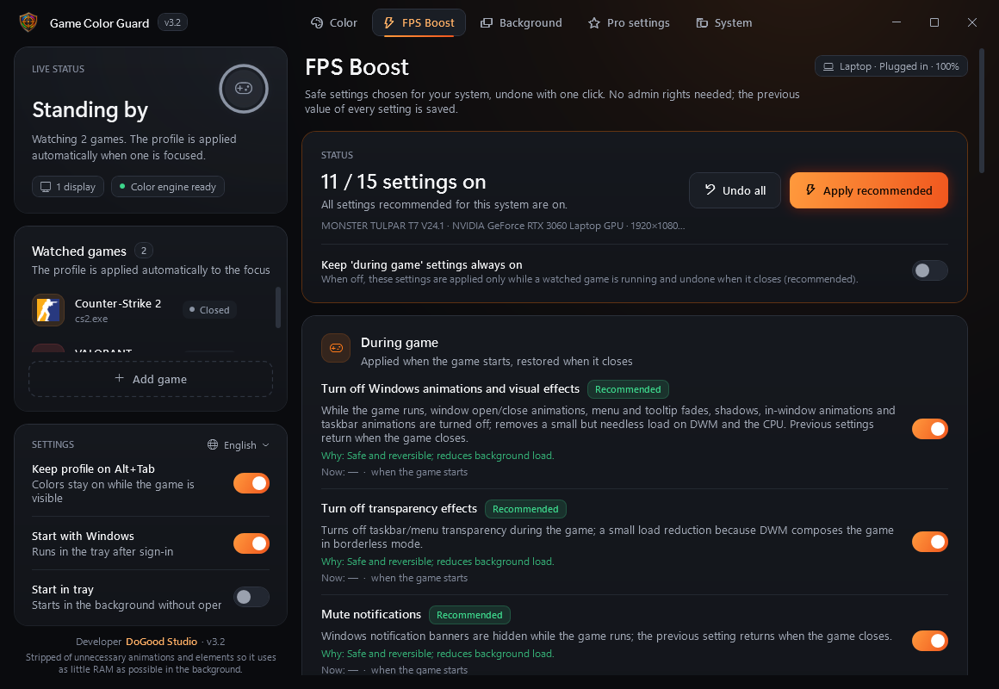
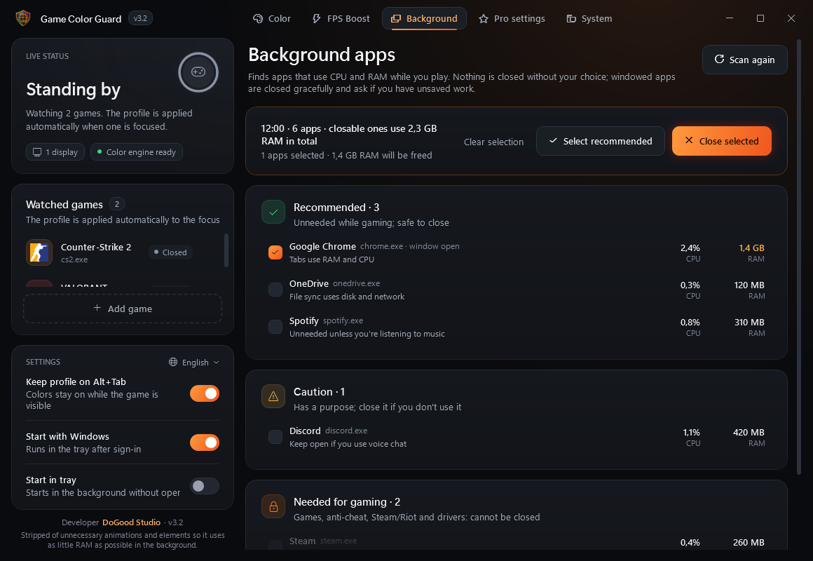
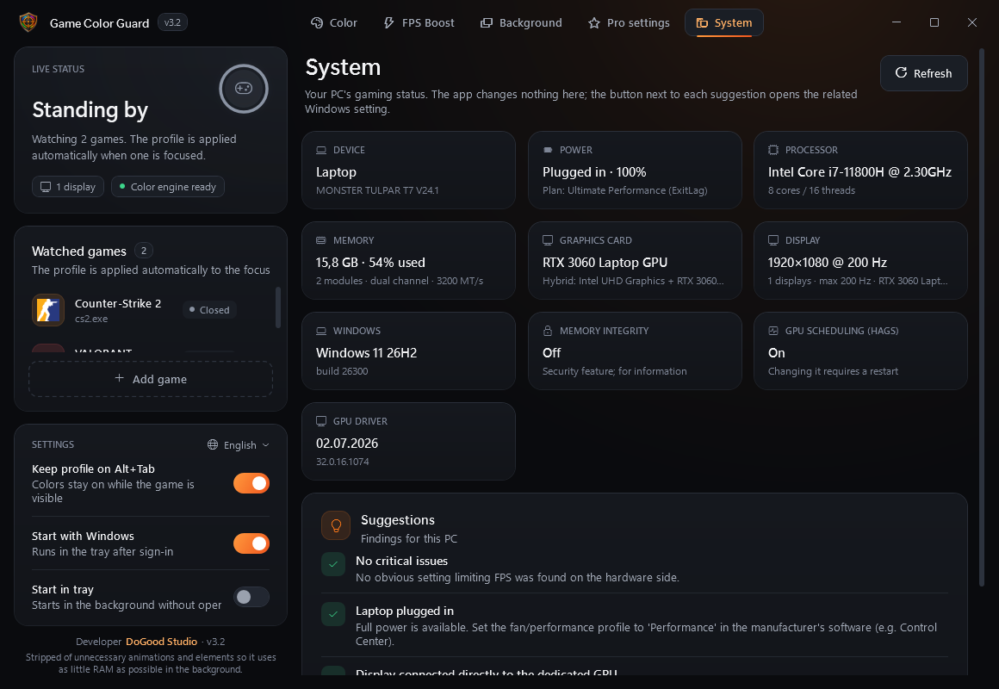

Free FPS Booster & Digital Vibrance
for CS2 and VALORANT
Make enemies easier to see. Color settings without NVIDIA: per-game digital vibrance, brightness and gamma that work on AMD, Intel and laptops and don't reset on Alt+Tab. Plus a safe, one-click reversible FPS boost tuned to your PC, and the current settings of 200+ pro players. Free.
Before / After
Real in-game screenshots. Drag the slider: the right side is the app's color math (Windows color matrix + gamma ramp) with its recommended profile of brightness 55, contrast 55, gamma 1.10 and vibrance 85. Players waiting in the shadows and dark corners stand out.

 BeforeAfter
BeforeAfter
Images: Counter-Strike 2 — Valve's Steam store image; VALORANT — in-game image from Riot Games' official VALORANT Asset Kit. The "after" side is produced with the same math the app applies to your screen; your result depends on your monitor and profile.
Free FPS Booster for CS2 and VALORANT
Knows your PC and recommends only safe settings you can undo with one click. Works on low-end PCs and laptops too.

Features
Everything in one window, five tabs.
Color Settings Without NVIDIA
Brightness, contrast, gamma, vibrance (saturation), hue and RGB per game. Uses the Windows color engine, so it works on NVIDIA, AMD and Intel, even on hybrid-graphics laptops where the driver setting has no effect. An alternative to VibranceGUI.
Doesn't Reset on Alt+Tab
The profile stays while the game is on screen and is removed when you minimize it or another window covers it. Your desktop, browser and videos keep their normal colors.
Free FPS Booster
Detects laptop or desktop, plugged in or on battery, hybrid GPU and monitor Hz, then recommends safe Windows settings: animations, Game DVR, Game Mode, power mode, game priority, highest refresh rate, high-performance GPU. Helps low-end PCs and laptops too.
Background App Cleaner
Lists running apps by CPU and RAM use. Games, anti-cheat and drivers are protected; only the apps you select are closed.
Pro Player Settings
201 pros from 37 top teams (19 CS2, 18 VALORANT). Sensitivity converted to your DPI, one-click CS2 config, copy VALORANT crosshair codes.
System Report
Single or dual-channel RAM and XMP, CPU power/thermal limits, SSD or HDD, GPU driver age, monitor Hz, Memory Integrity. Tells you what is holding your FPS back.
Screenshots




The app is available in English, Türkçe, Русский, العربية, Deutsch, Español and Português. It is stripped of unnecessary animations and elements so it uses as little RAM as possible in the background (about 33 MB in the tray).
It Won't Break Your PC
What It Does
- User-level settings only; no admin rights
- Saves every setting's previous value and restores it exactly with one click
- Touches nothing if Windows is already set the way it should be
- Writes CS2 configs as a new file and never touches yours
What It Deliberately Doesn't Do
- Disable Windows services or apply "magic" bcdedit/HPET tweaks
- Turn off Memory Integrity / VBS (a security feature)
- Touch game memory (VAC, Vanguard, FACEIT)
- Unproven "RAM cleaner" and timer tweaks
FAQ
Will I get banned (VAC, Vanguard, FACEIT)?
The app never reads or writes game memory and never injects into the game. Colors are changed through Windows' own gamma ramp and color matrix, the same level as the NVIDIA Control Panel or Windows color filters. We can't speak for anti-cheat vendors, but nothing in the app touches the game itself.
What is the AMD equivalent of digital vibrance? Does it work on AMD?
On AMD it is called Saturation (Radeon Adrenalin). Game Color Guard works on AMD directly: vibrance is applied by the Windows color engine, so no driver setting is needed.
Can I use digital vibrance on a laptop or with Intel graphics?
Yes. Because Windows applies the colors, it works with Intel integrated graphics and on hybrid-graphics laptops, including the built-in screen. The color layer is visible in borderless (windowed fullscreen) mode, not in exclusive fullscreen.
VibranceGUI is not working on my laptop, AMD or Intel PC. What can I use?
Game Color Guard does not depend on the graphics driver, so it works where driver-based tools can't reach the screen. Run your game in borderless / windowed fullscreen.
How do I make VALORANT more colorful or vibrant?
Raise vibrance (NVIDIA: Digital Vibrance, AMD: Saturation) and slightly raise brightness or gamma. Game Color Guard does this per game on any GPU and only while VALORANT is on screen. Set VALORANT to windowed fullscreen.
What is the best digital vibrance for CS2 and VALORANT?
Most guides suggest 60–80% in the NVIDIA Control Panel, and some top players keep the default. The app's "Recommended settings" button applies brightness 55, contrast 55, gamma 1.10 and vibrance 85 (50 is neutral); tune it on your own monitor with the 10-second live preview.
What are the best CS2 settings for FPS and visibility?
Keep Boost Player Contrast on and Global Shadow Quality at Medium or higher (on Low you can't see enemy shadows); lower shader, texture and particle detail; NVIDIA Reflex on and V-Sync off. The app's CS2 guide lists these with the reasons, and copies CS2 launch options in one click.
How do I boost FPS and fix FPS drops in CS2 and VALORANT?
Apply the recommended FPS Boost settings and close heavy background apps. The biggest gains usually come from plugging in a laptop, moving from single to dual-channel RAM and running your monitor at its highest Hz; the System page checks these on your PC. We don't promise a fixed FPS number.
Does digital vibrance increase FPS?
No. Vibrance is visual only; it helps you see, not render faster. FPS gains come from the separate FPS Boost page.
Is it free?
Yes. Under the PolyForm Noncommercial license you can use, modify and share it for non-commercial purposes; it may not be sold.
Windows shows a SmartScreen warning?
The exe is not code-signed, so it may appear on first launch: "More info" › "Run anyway". The source code is on GitHub and the exe is clean on VirusTotal (0/68).